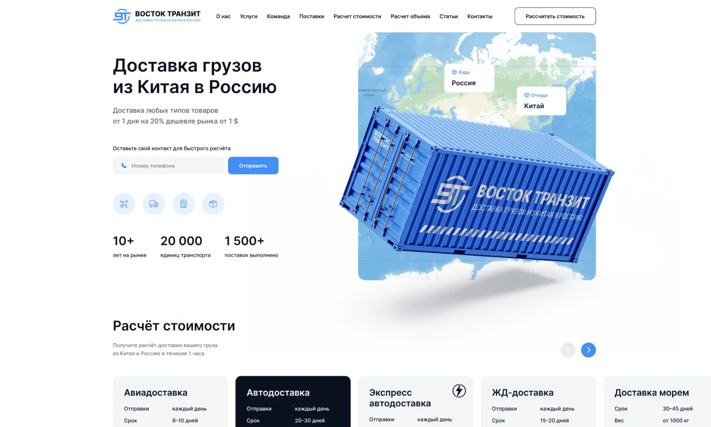

B2B-сервисы
Личные кабинеты, сервисы для клиентов, внутренние инструменты. Интерфейс, в котором пользователь не теряется на третьем шаге.
Веб-дизайн
Проектирую интерфейсы сайтов, B2B-сервисов и порталов для дилеров: продумываю сценарии, рисую все экраны и состояния, собираю кликабельный прототип и UI-кит. Код пишут ваши разработчики или я в рамках отдельного проекта.

Для кого
Отдельный дизайн интерфейса заказывают, когда разработка уже есть: свой программист, подрядчик или IT-отдел. Им не хватает продуманных сценариев и макетов, по которым можно спокойно писать код. Я закрываю именно эту часть.
Личные кабинеты, сервисы для клиентов, внутренние инструменты. Интерфейс, в котором пользователь не теряется на третьем шаге.
Порталы для дилеров, формы заказа, внутренние системы, которые сейчас живут в таблицах.
Прототип для проверки идеи на пользователях и показа инвесторам до того, как вложены деньги в разработку.
Термины
UX отвечает на вопрос «как это работает»: какие шаги проходит пользователь, где он может ошибиться, что видит после нажатия кнопки. UI отвечает на вопрос «как это выглядит»: цвета, шрифты, кнопки, отступы, состояния элементов.
Хороший интерфейс начинается с UX. Красивый экран, на котором закупщик не может найти нужный артикул, не помогает продажам. Поэтому сначала я проектирую сценарии и каркасы экранов, а уже потом рисую визуальный слой.
Ошибку в логике дешевле всего исправить на схеме экрана. Когда интерфейс уже запрограммирован, та же правка стоит дней работы разработчика. Поэтому согласование сценариев до дизайна экономит бюджет всего проекта.
Этапы
Обсуждаем, кто пользователи, какие задачи они решают и где сейчас спотыкаются. Смотрю текущий продукт, если он есть.
Описываю пути пользователя и собираю схемы экранов без визуального оформления. Согласуем логику до дизайна.
Рисую экраны в вашем фирменном стиле: все состояния, ошибки, пустые экраны, загрузки.
Связываю экраны в кликабельный прототип, по которому можно пройти сценарий как в готовом продукте.
Собираю библиотеку компонентов и передаю макеты разработчикам с пояснениями.
Результат
Файл с экранами для компьютера и телефона, включая состояния элементов и ошибки.
Кликабельная версия интерфейса для согласования и тестов на пользователях.
Кнопки, поля, таблицы, карточки и другие компоненты, из которых собираются новые экраны.
Короткое описание, как применять компоненты, чтобы интерфейс оставался единым после запуска.
Отступы, размеры, поведение элементов. Разработчику не нужно угадывать, что имелось в виду.
Разбираю макеты с разработчиками и отвечаю на вопросы.
Если разработка идёт параллельно, передаю экраны частями по мере согласования, чтобы программисты не ждали весь проект. Во время вёрстки отвечаю на вопросы и сверяю результат с макетами, чтобы в готовом продукте не потерялись отступы, состояния и мелкие детали.
В UX/UI-дизайн не входят вёрстка, программирование и хостинг. Если разработчика у вас нет, сайт можно заказать целиком: корпоративный сайт или сайт на Tilda.
Специфика
Интерфейс для дилера или инженера устроен иначе, чем приложение для покупок. Пользователь работает с ним каждый день, ему нужна скорость, а не развлечение. Отсюда несколько правил, которых я придерживаюсь:
Если продукт работает и на зарубежном рынке, сразу закладываю английскую версию: длину подписей, форматы дат, единицы измерения. Согласование веду на русском или английском.
Приёмы из потребительских приложений здесь часто мешают: крупные картинки, анимации и длинные онбординги замедляют работу.
Перед дизайном я прошу показать, как сотрудники и клиенты работают сейчас: таблицы, письма, скриншоты старой системы. Это самый честный источник требований. По нему видно, какие поля заполняют на самом деле, где копируют данные вручную и какие шаги можно убрать.
Цены
Объём интерфейса бывает очень разным: от десяти экранов до сотни. Поэтому стоимость дизайна без разработки я считаю после брифа. Если после дизайна нужен готовый сайт, ориентиры такие.
после брифа
от 80 000 ₽
от 150 000 ₽
Срок: 6–8 недель
Рассчитать стоимостьПрикинуть бюджет можно в калькуляторе. Для проектов от 60 000 ₽ предоплата 50%. Цены действуют до 28 февраля 2027 года. Работаю официально: как самозанятый в России, через ООО или как ИП в Грузии для зарубежных проектов. Договор, счёт, чек и акт, подключён к ЭДО.
Кейс
Для Ravenol, немецкого производителя моторных масел, я делал дизайн страниц сайта и UX/UI. Работа шла внутри системы глобального бренда: задача была не придумать новый стиль, а аккуратно развить существующий. Другие проекты в портфолио сайтов.
Такая работа внутри чужих правил типична для крупных компаний. Если у вас уже есть брендбук или интерфейс, который пользователи знают, я не ломаю привычное, а навожу порядок: выравниваю компоненты, убираю лишние шаги, дописываю недостающие состояния.
FAQ
Зависит от числа экранов и сложности сценариев, поэтому считаю после брифа. Если нужен сайт под ключ, на Tilda от 80 000 ₽, на индивидуальной разработке от 150 000 ₽.
Да, это основной формат этой услуги. Передаю макеты, прототип и UI-кит вашим разработчикам.
UX отвечает за логику и сценарии, UI за внешний вид. Я делаю обе части.
В сайте под ключ я довожу проект до запуска. В UX/UI-дизайне результат работы: макеты и прототип для разработки.
Зависит от числа экранов и сценариев. Работаю спринтами: первые каркасы показываю через несколько дней, срок всего проекта фиксируем после брифа.
Пользуюсь платными ИИ-инструментами как помощью, например для черновых вариантов. Сценарии, макеты и итоговый результат проверяю и дорабатываю сам.
Да. Начинаю с разбора текущих сценариев, подробнее на странице редизайна.
Обсудим ваш интерфейс
Расскажите о продукте и пользователях, предложу план работ.